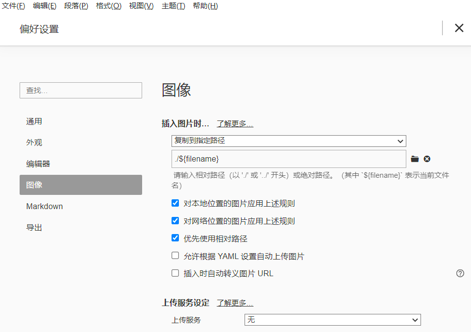

安装NexT 方法1 在Hexo文件夹下，右键Git Bash Here，
1 git clone https://github.com/theme-next/hexo-theme-next themes/next
方法2 下载zip安装包：https://github.com/theme-next/hexo-theme-next
管理员解压，文件夹改名为next（全部小写），至themes目录下。
配置 官方配置文档
配置 | Hexo
网上博客
Hexo的Next主题详细配置
Hexo设置主题以及Next主题个性设置
添加动态背景 打开生成的Hexo目录\themes\next/layout/_layout.swig文件 ，在 < /body>上面添加代码：
1 2 3 {% if theme.canvas_nest %} <script type ="text/javascript" src ="//cdn.bootcss.com/canvas-nest.js/1.0.0/canvas-nest.min.js" > </script > {% endif %}
打开主题配置文件，在里面添加如下代码（可以放在最后面）：
添加字数统计和阅读时长 参考文章：
Hexo博客NexT主题下添加字数统计和阅读时长
安装hexo-symbols-count-time：
1 $ npm install hexo-symbols-count-time --save
在站点配置文件添加如下配置：
1 2 3 4 5 6 symbols_count_time: symbols: true time: true total_symbols: true total_time: true exclude_codeblock: false
在NexT主题配置文件添加如下配置：
1 2 3 4 5 6 7 8 9 symbols_count_time: separated_meta: true item_text_post: true item_text_total: false awl: 4 wpm: 275 suffix: mins.
添加文章更新时间 主题配置文件下，updated_at 的属性改为 true 即可。
设置代码高亮主题 NexT 使用 Tomorrow Theme 作为代码高亮，共有5款主题供选择。
默认使用的是 白色的 normal 主题，可选的值有 :
normal，night， night blue， night bright， night eighties, 如下图所示：
修改：在NexT下的_config.yml中设置
添加阅读全文按钮 只需在文章中你想截止的地方添加
添加搜索功能 1、安装 hexo-generator-searchdb 插件
1 $ npm install hexo-generator-searchdb --save
2、打开 站点配置文件 找到Extensions在下面添加
1 2 3 4 5 6 search: path: search.xml field: post format: html limit: 10000
3、打开 主题配置文件 找到Local search，将enable设置为true
头像设置 然后将准备好的gif图片放入next/source/images/中即可。
鼠标点击特效 参考博客链接：
hexo-next 添加鼠标点击特效
在…\themes\hexo-theme-next\source\js\my_js 下新建clicklove.js文件，source后面的路径和文件名都可以自定义，内容如下：
1 2 !function (e, t, a ) function r (for (var e = 0 ; e < s.length; e++) s[e].alpha <= 0 ? (t.body.removeChild(s[e].el), s.splice(e, 1 )) : (s[e].y--, s[e].scale += .004 , s[e].alpha -= .013 , s[e].el.style.cssText = "left:" + s[e].x + "px;top:" + s[e].y + "px;opacity:" + s[e].alpha + ";transform:scale(" + s[e].scale + "," + s[e].scale + ") rotate(45deg);background:" + s[e].color + ";z-index:99999" );requestAnimationFrame(r)}function n (var t = "function" == typeof e.onclick && e.onclick;e.onclick = function (e ) function o (e ) var a = t.createElement("div" );a.className = "heart" , s.push({el : a,x : e.clientX - 5 ,y : e.clientY - 5 ,scale : 1 ,alpha : 1 ,color : c()}), t.body.appendChild(a)}function i (e ) var a = t.createElement("style" );a.type = "text/css" ;try {a.appendChild(t.createTextNode(e))} catch (t) {a.styleSheet.cssText = e}t.getElementsByTagName("head" )[0 ].appendChild(a)}function c (return "rgb(" + ~~(255 * Math .random()) + "," + ~~(255 * Math .random()) + "," + ~~(255 * Math .random()) + ")" }var s = [];e.requestAnimationFrame = e.requestAnimationFrame || e.webkitRequestAnimationFrame || e.mozRequestAnimationFrame || e.oRequestAnimationFrame || e.msRequestAnimationFrame || function (e ) setTimeout (e, 1e3 / 60 )}, i(".heart{width: 10px;height: 10px;position: fixed;background: #f00;transform: rotate(45deg);-webkit-transform: rotate(45deg);-moz-transform: rotate(45deg);}.heart:after,.heart:before{content: '';width: inherit;height: inherit;background: inherit;border-radius: 50%;-webkit-border-radius: 50%;-moz-border-radius: 50%;position: fixed;}.heart:after{top: -5px;}.heart:before{left: -5px;}" ), n(), r()}(window , document );
在…\themes\hexo-theme-next\layout\ 路径下找到“_layout.swig” 文件，在
标签中引入新建的js文件，代码如下：
1 <script type ="text/javascript" src ="/js/my_js/clicklove.js" > </script >
本站运行时间 在/next/layout/_partials/footer.swig在自己喜欢的位置（比如在<div class="copyright">.....</div>这个标签下）加上如下代码：
1 2 3 4 5 6 7 8 9 10 11 12 13 14 15 16 17 18 19 20 21 <br /> <span id ="timeDate" > 载入天数...</span > <span id ="times" > 载入时分秒...</span > <script > var now = new Date (); function createtime ( var birth= new Date ("7/2/2019 23:12:45" ); this_year = now.getFullYear(); var anniversary = new Date ("7/2/2019 23:12:45" ).setFullYear(this_year); now.setTime(now.getTime()+250 ); years = this_year - 2019 ; days = (now - anniversary ) / 1000 / 60 / 60 / 24 ; dnum = Math .floor(days); hours = (now - anniversary ) / 1000 / 60 / 60 - (24 * dnum); hnum = Math .floor(hours); if (String (hnum).length ==1 ){hnum = "0" + hnum;} minutes = (now - anniversary ) / 1000 /60 - (24 * 60 * dnum) - (60 * hnum); mnum = Math .floor(minutes); if (String (mnum).length ==1 ){mnum = "0" + mnum;} seconds = (now - anniversary ) / 1000 - (24 * 60 * 60 * dnum) - (60 * 60 * hnum) - (60 * mnum); snum = Math .round(seconds); if (String (snum).length ==1 ){snum = "0" + snum;} document .getElementById("timeDate" ).innerHTML = "本站已安全运行 " + years + " 年 " + dnum + " 天 " ; document .getElementById("times" ).innerHTML = hnum + " 小时 " + mnum + " 分 " + snum + " 秒" ; } setInterval ("createtime()" ,250 ); </script >
博客插入图片 安装插件：
1 npm install hexo-renderer-marked
在Hexo的config.yaml中更改配置如下：
1 2 3 4 post_asset_folder: true marked: prependRoot: true postAsset: true
之后就可以在使用的方式愉快的插入图片了。不过，需要事先将图片xxx.jpg存入博客同名的文件夹。
与Typora结合 粘贴图片到Typora时，可以自动保存到目标文件夹。不必事先保存图片。
设置方式：
在Typora中找到文件->偏好设置->图像，将“插入图片时…”选项改为“复制到指定路径：./${filename}”，并可勾选前三个选项。
但是这样的话图片路径实际上是文件名/图片名.jpg，而不是/图片名.jpg。所以等写完博客后，再用Ctrl+H做一个全局替换。

支持LaTeX Hexo默认的渲染引擎是marked，不支持mathjax，所以需要更换Hexo的渲染引擎为hexo-renderer-kramed：
安装Kramed 1 2 npm uninstall hexo-renderer-marked --save npm install hexo-renderer-kramed --save
更改文件配置 打开/node_modules/hexo-renderer-kramed/lib/renderer.js
1 2 3 4 5 function formatText (text ) return text.replace(/`\$(.*?)\$`/g , '$$$$$1$$$$' ); }
修改为：
1 2 3 4 function formatText (text ) return text; }
停用hexo-math并安装mathjax 卸载hexo-math
1 npm uninstall hexo-math --save
安装hexo-renderer-mathjax
1 npm install hexo-renderer-mathjax --save
更新Mathjax配置文件 打开/node_modules/hexo-renderer-mathjax/mathjax.html<script>改为：
1 <script src="https://cdnjs.cloudflare.com/ajax/libs/mathjax/2.7.1/MathJax.js?config=TeX-MML-AM_CHTML" ></script>
更改默认转义规则 因为LaTeX与markdown语法有语义冲突，所以 hexo 默认的转义规则会将一些字符进行转义，所以我们需要对默认的规则进行修改./node_modules\kramed\lib\rules\inline.js
1 escape : /^\\([`*\[\]()#$+\-.!_>])/ ,
1 em: /^\*((?:\*\*|[\s\S])+?)\*(?!\*)/ ,
开启mathjax 打开主题目录下的config.yml文件（注意这里是所使用主题的yml文件，不是hexo的yml文件）
并且写博客的时候需要开启Latex就需要加上头开启Mathjax: true